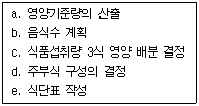

한식조리기능사 (2007-09-16 기출문제)
1과목: 식품위생 및 법규
1. 집단급식소는 상시 1회 몇 인에게 식사를 제공하는 급식소인가?
- 5인 이상
- 10인 이상
- 20인 이상
- 50인 이상
(정답률: 93%)

2. 다음 중 조리사 면허 취소 사유에 해당하지 않는 것은?
- 조리사가 식중독 기타 위생상 중대한 사고를 발생하게 하여3차 위반을 한 경우
- 조리사가 타인에게 면허를 대여하여 이를 사용하게 하여 3차 위반을 한 경우
- 조리사가 업무 정지 기간 중에 조리사의 업무를 한 때
- 조리사가 식품위생법에 의한 교육을 받지 아니하여 3차 위반을 한 경우
(정답률: 63%)
3. 식품 등의 위생적 취급에 관한 기준이 아닌 것은?
- 식품 등을 취급하는 원료보관실, 제조가공실, 포장실 등의 내부는 항상 청결하게 관리한다.
- 식품 등의 원료 및 제품 중 부패 및 변질되기 쉬운 것은 냉동 및 냉장시설에 보관 관리한다.
- 유통기한이 경과된 식품 등을 판매하거나 판매의 목적으로 진열, 보관하여서는 아니 된다.
- 모든 식품 및 원료는 냉장, 냉동시설에 보관, 관리한다.
(정답률: 88%)
4. 식품 등의 표시기준을 수록한 식품 등의 공전을 작성, 보급하여야 하는 자는?
- 식품의약품안전청장
- 보건소장
- 시, 도지사
- 식품위생감시원
(정답률: 75%)
5. 식품위생법규상 영업에 종사하지 못하는 질병의 종류에 해당하지 않는 것은?
- <전염병예방법>에 의한 제1군 전염병 중 장출혈성 대장균감염증
- <전염병예방법>에 의한 제3군 전염병 중 결핵(비전염성인 경우를 제외한다.)
- 피부병 기타 화농성질환
- <전염병예방법>에 의한 제2군 전염병 중 홍역
(정답률: 42%)
6. 일반적으로 복어의 독성이 가장 강한 시기는?
- 2~3월
- 5~6월
- 8~9월
- 10~11월
(정답률: 67%)
7. 살모넬라(Salmonella)균으로 인한 식중독에 대한 설명으로 틀린 것은?
- 주요 증상으로 급성위장염을 일으킨다.
- 주로 통조림 등의 산소가 부족한 식품에서 유발된다.
- 장내세균의 일종 이다.
- 계란, 육류 및 어육가공품이 주요 원인식품이다.
(정답률: 72%)
8. 식품과 관련 독소의 연결이 잘못된 것은?
- 감자 - 솔라닌
- 목화씨 - 고시폴
- 바지락 - 엔테로톡신
- 모시조개 - 베네루핀
(정답률: 86%)
9. HACCP의 의무적용 대상 식품에 해당하지 않는 것은?
- 빙과류
- 비가열음료
- 껌류
- 레토르트식품
(정답률: 73%)
10. 다음 식품첨가물 중 보존료가 아닌 것은?
- 데히드로초산
- 소르빈산
- 벤조산
- 부틸히드록시 아니솔
(정답률: 55%)
11. 노로바이러스에 대한 설명으로 틀린 것은?
- 발병 후 자연 치유되지 않는다.
- 크기가 매우 작고 구형이다.
- 급성 위장관염을 일으키는 식중독 원인체이다.
- 감염되면 설사, 복통, 구토 등의 증상이 나타난다.
(정답률: 76%)
12. 빵을 비롯한 밀가루제품에서 적당한 형태를 갖추게 하기 위해서 첨가되는 첨가물은?
- 팽창제
- 유화제
- 피막제
- 산화방지제
(정답률: 70%)
13. 다음 중 독소형 식중독은?
- 장염 비브리오균 식중독
- 아리조나균 식중독
- 포도상구균 식중독
- 살모넬라균 식중독
(정답률: 85%)
14. 식품의 신선도 또는 부패의 이화학적 판정에 이용되는 항목이 아닌 것은?
- 히스타민 함량
- 당 함량
- 휘발성염기질소 함량
- 트리메틸아민 함량
(정답률: 74%)
15. 다음 중 독버섯의 유독 성분은?
- 셉신
- 아미그달린
- 시큐톡신
- 마이코톡신
(정답률: 41%)
2과목: 식품학
16. 식품의 수분활성도를 올바르게 설명한 것은?
- 임의의 온도에서 식품이 나타내는 수증기압에 대한 같은 온도에 있어서 순수한 물의 수증기압의 비율
- 임의의 온도에서 식품이 나타내는 수증기압
- 임의의 온도에서 식품의 수분함량
- 임의의 온도에서 식품과 동량의 순수한 물의 최대수증기압
(정답률: 75%)
17. 과일잼 가공시 펙틴은 주로 어떤 역할을 하는가?
- 신맛 증가
- 구조 형성
- 향 보존
- 색소 보존
(정답률: 76%)
18. 오이나 배추의 녹색이 김치를 담구었을 때 점차 갈색을 띠게 되는데 이것은 어떤 색소의 변화 때문인가?
- 카로티노이드
- 클로로필
- 안토시아닌
- 안토잔틴
(정답률: 63%)
19. 조리와 가공 중 천연색소의 변색요인과 거리가 먼 것은?
- 산소
- 효소
- 질소
- 금속
(정답률: 50%)
20. 변성된 단백질 분자가 집합하여 질서정연한 망상 구조를 형성하는 단백질의 기능성과 관계가 먼 식품은?
- 두부
- 어묵
- 빵 반죽
- 북어
(정답률: 74%)
21. 수분활성도(Aw)에 대한 설명으로 틀린 것은?
- 말린 과일은 생과일보다 Aw가 낮다.
- 세균은 생육최저 Aw가 미생물 중에서 가장 낮다.
- 효소활성은 Aw가 클수록 증가한다.
- 소금이나 설탕은 가공식품의 Aw를 낮출 수 있다.
(정답률: 57%)
22. 감자류(서류)에 대한 설명으로 틀린 것은?
- 열량 공급원이다.
- 수분함량이 적어 저장성이 우수하다.
- 탄수화물 급원식품이다.
- 무기질 중 칼륨(K) 함량이 비교적 높다.
(정답률: 52%)
23. 꽁치 160g의 단백질 양은? (단, 꽁치 100g당 단백질 양: 24.9g)
- 28.7g
- 34.6g
- 39.8g
- 43.2g
(정답률: 68%)
24. 식품의 냉장효과를 가장 바르게 나타낸 것은?
- 식품의 영구보존
- 식품의 동결로 세균의 멸균
- 오염 세균의 사멸
- 식품의 보존효과 연장
(정답률: 86%)
25. 칼슘과 단백질의 흡수를 돕고 정장 효과가 있는 당은?
- 설탕
- 과당
- 유당
- 맥아당
(정답률: 59%)
26. 갈변반응으로 향기와 색이 좋아지는 식품이 아닌 것은?
- 홍차
- 간장
- 된장
- 녹차
(정답률: 62%)
27. 폴라보노이드계 색소로 채소와 과일 등에 널리 분포해 있으며 산화방지제로도 사용되는 것은?
- 루테인
- 케르세틴
- 아스타산틴
- 크립토산틴
(정답률: 25%)
28. 미역에 대한 설명 중 틀린 것은?
- 탄수화물의 대부분은 난소화성이다.
- 단백질의 질이 낮다
- 칼슘의 함량이 많다.
- 당질은 글리코겐 형태로만 존재한다.
(정답률: 33%)
29. 달걀에 대한 설명으로 틀린 것은?
- 식품 중 단백가가 가장 높다.
- 난황의 레시틴은 유화제이다.
- 난백의 수분이 난황보다 많다.
- 당질은 글리코겐 형태로만 존재한다.
(정답률: 70%)
30. 다음 중 견과류에 속하는 식품은?
- 호두
- 살구
- 딸기
- 자두
(정답률: 95%)
3과목: 조리이론과 원가계산
31. 튀김기름을 여러번 사용하였을 때 일어나는 현상이 아닌 것은?
- 불포화지방산의 함량이 감소한다.
- 흡유량이 작아진다.
- 튀김 시 거품이 생긴다.
- 점도가 증가한다.
(정답률: 44%)
32. 소화효소의 주요 구성 성분은?
- 알칼로이드
- 단백질
- 복합지방
- 당질
(정답률: 52%)
33. 직영급식과 비교하여 위탁급식의 단점에 해당하지 않는 것은?
- 인건비가 증가하고 서비스가 잘 되지 않는다.
- 기업이나 단체의 권한이 축소된다.
- 급식경영을 지나치게 영리화하여 운영할 수 있다.
- 영양관리에 문제가 발생할 수 있다.
(정답률: 43%)
34. 밀가루 반죽에 첨가하는 재료 중 반죽의 점탄성을 약화시키는 것은?
- 우유
- 설탕
- 달걀
- 소금
(정답률: 44%)
35. 급식부문의 원가요소에서 직접원가의 급식재료비에 해당하지 않는 것은?
- 조미료비
- 급식용구비
- 보험료
- 조리제 식품비
(정답률: 88%)
36. 각 식품에 대한 대치식품의 연결이 적합하지 않는 것은?
- 돼지고기 - 두부, 쇠고기, 닭고기
- 고등어 - 삼치, 꽁치, 동태
- 닭고기 - 우유 및 유제품
- 시금치 - 깻잎, 상추, 배추
(정답률: 84%)
37. 두부를 부드러운 상태로 조리하려고 할 때의 조치 사항으로 적합하지 않는 것은?
- 찌개를 끓일 때에는 두부를 나중에 넣는다.
- 소금을 가하여 두부를 조리한다.
- 칼슘이온을 첨가하여 콩 단백질과의 결합을 촉진시킨다.
- 식염수에 담가두었다가 조리한다.
(정답률: 45%)
38. 달걀의 난황 속에 있는 단백질이 아닌 것은?
- 리포비텔린
- 리포비텔리닌
- 리비틴
- 레시틴
(정답률: 58%)
39. 밀가루 반죽에 사용되는 물의 기능이 아닌 것은?
- 반죽의 경도에 영향을 준다.
- 소금의 용해를 도와 반죽에 골고루 섞이게 한다.
- 글루템의 형성을 돕는다.
- 전분의 호화를 방지한다.
(정답률: 68%)
40. 식품첨가물에 대한 설명으로 틀린 것은?
- 바비큐소스와 우스터소스는 가공조미료이다.
- 맥주의 쓴맛을 내는 호프는 조미료에 속한다.
- HVP, HAP는 화학적 조미료이다.
- 설탕은 감미료이다.
(정답률: 39%)
41. 생선의 조리 방법에 관한 설명으로 옳은 것은?
- 선도가 낮은 생선은 양념을 담백하게 하고 뚜껑을 닫고 잠깐 끓인다.
- 지방함량이 높은 생선보다는 낮은 생선으로 구이를 하는 것이 풍미가 더 좋다.
- 생선조림은 오래 가열해야 단백질이 단단하게 응고되어 맛이 좋아진다.
- 양념간장이 끓을 때 생선을 넣어야 맛 성분의 유출을 막을 수 있다.
(정답률: 61%)
42. 식소다(중조)를 넣고 채소를 데치면 어떤 영양소의 손실이 가장 크게 발생하는가?
- 비타민 A, E, K
- 비타민 B1, B2, C
- 비타민 A, C, E
- 비타민 B6, B12, D
(정답률: 55%)
43. 다음 중 원가의 구성으로 틀린 것은?
- 직접원가 = 직접재료비 + 직접노무비 + 직접경비
- 제조원가 = 직접원가 + 제조간접비
- 총원가 = 제조원가 + 판매경비 + 일반관리비
- 판매가격 = 총원가 + 판매경비
(정답률: 46%)
44. 영리를 목적으로 계속적으로 특정다수인에게 음식물을 공급하는 기숙사는 식품위생법규상 집단급식소에 해당하지 않는다. 그 이유는?
- 집단급식소는 계속적으로 음식물을 공급하지 않는다.
- 기숙사 식당은 급식시설에 해당하지 않는다.
- 집단급식소는 특정다수인에게 음식물을 공급하지 않는다.
- 집단급식소는 영리를 목적으로 하지 않는다.
(정답률: 70%)
45. 영양소와 소화효소가 바르게 연결된 것은?
- 단백질 - 리파아제
- 탄수화물 - 아밀라아제
- 지방 - 펩신
- 유당 - 트립신
(정답률: 69%)
46. 다음 식단 작성의 순서를 바르게 나열한 것은?

- a-c-d-b-e
- a-b-c-d-e
- a-c-b-d-e
- a-b-c-e-d
(정답률: 53%)
47. 생선의 신선도를 판별하는 방법으로 잘못된 것은?
- 생선의 육질이 단단하고 탄력성이 있는 것이 신선하다.
- 눈의 수정체가 투명하지 않고 아가미색이 어두운 것은 신선하지 않다.
- 어체의 특유한 빛을 띄는 것이 신선하다.
- 트리메틸아민이 많이 생성된 것이 신선하다.
(정답률: 79%)
48. 채소의 조리가공 중 비타민 C의 손실에 대한 설명으로 옳은 것은?
- 시금치를 데치는 시간이 길수록 비타민 C의 손실이 적다.
- 당근을 데칠 때 크기를 작게 할수록 비타민 C의 손실이 적다.
- 무채를 곱게 썰어 공기 중에 장시간 방치하여도 비타민 C의 손실에는 영향이 없다.
- 동결처리한 시금치는 낮은 온도에 저장할수록 비타민 C의 손실이 적다.
(정답률: 64%)
49. 다음 중 비결정형 캔디가 아닌 것은?
- 캐러멜
- 폰당
- 마시멜로우
- 태피
(정답률: 64%)
50. 커피를 끓이는 방법에 대한 설명으로 옳은 것은?
- 알칼리도가 높은 물로 끊이면 커피 중의 산이 중화되어 커피의 맛이 감퇴된다.
- 탄닌은 쓴맛을 주는 성분으로 커피를 끓여도 유출되지 않는다.
- 원두커피는 냉수에 넣고 오래 끓이면 모든 성분이 잘 우러나와 맛과 향이 증진된다.
- 굵게 분쇄된 원두커피는 여과법으로 준비하는 경우 맛과 향이 최대, 최적의 상태로 우러나온다.
(정답률: 44%)
4과목: 공중보건
51. 다음 중 이타이이타이병의 유발물질은?
- 수은
- 납
- 칼슘
- 카드뮴
(정답률: 78%)
52. 쇠고기를 가열하지 않고 회로 먹을 때 생길 수 있는 가능성이 가장 큰 기생충은?
- 민촌충
- 선모충
- 유구조충
- 회충
(정답률: 54%)
53. 간디스토마는 제2중간숙주인 민물고기 내에서 어떤 형태로 존재하다가 인체에 감염을 일으키는가?
- 피낭유충(metacer caria)
- 레디아(redia)
- 유모유충(miracidium)
- 포자유충(sporocyst)
(정답률: 70%)
54. 일산화탄소(CO)에 대한 설명으로 틀린 것은?
- 헤모글로빈과의 친화성이 매우 강하다.
- 일반 공지 중 0.1% 정도 함유되어 있다.
- 탄소를 함유한 유기물이 불완전 연소 할 때 발생한다.
- 제철, 도시가스 제조 과정에서 발생한다.
(정답률: 44%)
55. 다음 중 먹는 물 소독에 가장 적합한 것은?
- 염소제
- 알코올
- 과산화수소
- 생석회
(정답률: 67%)
56. WHO에 의한 건강의 정의를 가장 잘 나타낸 것은?
- 질병이 없으며 허약하지 않은 상태
- 육체적, 정신적 및 사회적 안녕의 완전상태
- 탄소를 함유한 유기물이 불완전연소 할 때 발생한다.
- 육체적 고통이 없고 정신적으로 편안한 상태
(정답률: 88%)
57. 중금속과 중독 증상의 연결이 잘못된 것은?
- 카드뮴-신장기능 장애
- 크롬-비중격천공
- 수은-홍독성 성분
- 납-섬유화 현상
(정답률: 54%)
58. 장티푸스, 디프테리아 등이 수십 년을 한 주기로 대유행되는 현상은?
- 추세변화
- 계절적 변화
- 순환 변화
- 불규칙 변화
(정답률: 47%)
59. 전염병의 예방대책 중 특히 전염경로에 대한 대책은?
- 환자를 치료한다.
- 예방 주사를 접종한다.
- 면역혈청을 주사한다.
- 손을 소독한다.
(정답률: 69%)
60. 다음 중 자외선을 이용한 살균 시 가장 유효한 파장은?
- 250~260nm
- 350~360nm
- 450~460nm
- 550~560nm
(정답률: 63%)